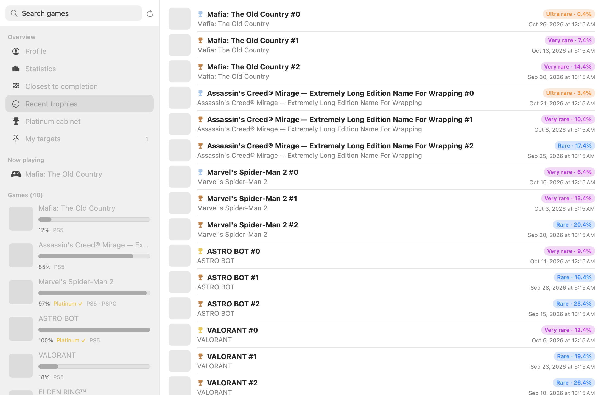
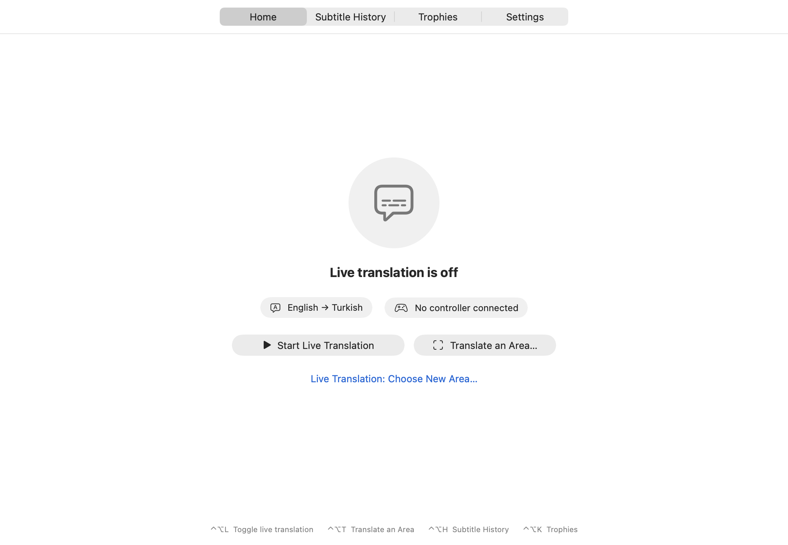

Çoğu oyun Türkçe altyazıyla gelmiyor. SubLens, Mac'te PS Remote Play ile oynarken altyazıları canlı olarak Türkçeye çevirir. Cihaz üstünde, ücretsiz, gizli.
Mac için indirGitHubÜcretsiz · macOS 26 · Apple silicon
Altyazı alanını bir kez seç. Yeni satırlar bir saniyenin altında, orijinalin üstüne çevrilir.
Tuş ipuçlarını ve ekran yazılarını atlar. Karakter adlarını çevirmez, renkli gösterir.
Mektup, menü, eşya açıklaması — tek kısayol.
Okuma ve çeviri Mac'inde çalışır. Hiçbir şey buluta gitmez.
Nadirlik, istatistikler, platine en yakın oyunlar, notlu hedefler, rehber linkleri.
DualSense pili menü çubuğunda, pil azalınca oyunun üstünde uyarı.
Türkçe başta olmak üzere Apple'ın cihaz üstü çevirisinin desteklediği bütün diller — liste büyüyor.
PSNProfiles'ı ve PowerPyx rehberlerini sevenler burada kendini evinde hissedecek.

SubLens'in PSNProfiles veya PowerPyx ile bağlantısı yoktur; herkese açık rehberlerine bağlantı verir.

Evet. SubLens ücretsiz ve MIT lisanslı açık kaynak.
Çeviri için hayır: dil paketi indirildikten sonra her şey Mac'inde çalışır. Kupalar için bağlantı gerekir.
PS Remote Play'de ekranda altyazısı olan her oyunda — ve altyazılı her videoda.
Apple'ın cihaz üstü tanıma ve çevirisinin desteklediği bütün diller — 20'den fazla.
Hayır. SubLens bağımsız bir projedir.